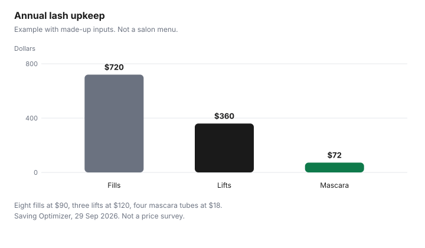

Personal Care · Canada
Lash Extensions, Lifts and Brow Services: Costs and Cheaper Alternatives
Lash extensions cost the most over a year because of refills: in a made-up example, eight fills at $90 were $720, three lifts at $120 were $360, and four tubes of mascara at $18 were $72. Health Canada says coal-tar dyes must not be used on eyebrows or eyelashes. Lash extensions are a first appointment plus a refill cycle. The year is the cycle. A lift, a tint, mascara, or strips can cost less only when you actually switch, and only when the product near your eyes is one the label allows. This page prices the cycle with made-up inputs and quotes Health Canada on dyes and eye-area adhesives. It does not rank a technician. Colour on the scalp is the home colour guide. A repeating personal-care bill belongs in a cap, which is the subscription cap guide, even when no company is billing you automatically.
Key takeaways
- No salon price for extensions, lifts, or brow services is quoted. The annual chart is an example with made-up inputs.
- In that example, eight fills at $90 are $720, three lifts at $120 are $360, and four mascara tubes at $18 are $72.
- Health Canada’s hair dyes page says coal-tar hair dyes must not be used on eyebrows or eyelashes, because that may cause blindness.
- A 2023-2024 Health Canada project says cyanoacrylate eyelash adhesives are for professional use and need the hotlist cautions.
- A serum without a DIN is not an approved drug. The cosmetics page says a notification tells Health Canada a cosmetic is being sold. Claims must not mislead.
Service pricing and refill cycles
Ask for three numbers before a full set: the full set, the fill, and the weeks the technician says a fill is due. Annual cost is the full set if you pay it this year, plus fill price times the fills you will actually book.
This page does not cite a salon menu, so it does not print a Canadian price. Example with made-up inputs: a fill at $90, every six and a half weeks or so, eight times a year, is $720. Skip the fills and the $720 does not disappear. Lashes you do not maintain are a look you may not want, plus the removal if the salon charges one. Write that removal in your column if the menu has it.
Treat the cycle like a subscription you can see. The subscription cap guide is the ceiling for repeating bills. The zero-based budget guide is where the $720 has to come from, instead of from whatever is left. A fill schedule you will not keep is a plan to pay for a full set again sooner. That second full set belongs in the year.
Lifts and tints vs extensions
A lift or a tint is a different interval. It is cheaper in a year only when the visits are fewer or the price is lower, and when you stop booking fills.
Example with made-up inputs: three lifts at $120 are $360, which is half of the $720 fill example. If you book a lift every six weeks, the count is no longer three and the comparison moves. This page does not say a lift looks like extensions. It says the bills are different shapes.
A tint is not a small dye job you improvise from a hair-colour box. Health Canada’s hair dyes page, page details 2016-12-05, checked 29 Sep 2026, says permanent and semi-permanent dyes that use coal-tar dye bases must warn that the product may irritate some people, must warn not to use it on eyebrows or eyelashes because this may cause blindness, and must include patch-test instructions. The Cosmetic Ingredient Hotlist repeats that caution for those hair dyes, including the line that they must not be used for dyeing eyelashes or eyebrows. A brow tint or a lash tint sold as its own product still has to be read. If the label forbids the eye area, do not move a scalp dye there to save the service fee. The patch-test steps are on the home colour guide.
Serums: claims and approvals
Health Canada’s cosmetics page, page details 2025-12-29, checked 29 Sep 2026, says a cosmetic is any substance used to clean, improve, or change the complexion, skin, hair, nails, or teeth. It says the Cosmetic Notification Form informs Health Canada when a new cosmetic is being sold.
It says claims on a label or in an ad must be accurate so they do not mislead. A notification is not described on that page as a drug licence. If a serum box prints a DIN, search it in the Drug Product Database, which, checked the same day, searches by drug identification number. If it prints an NPN, use the Licensed Natural Health Products Database linked from that search area. This page does not name a serum, and it does not say a cosmetic serum grows lashes.
Eye cosmetics, on the same cosmetics page, must meet the same safety and clean-manufacturing requirements as other cosmetics, and the page says part of the responsibility sits with the person using them. Do not treat a “clinical” word on a box as a Health Canada approval. Store-brand mascara is a label and size comparison, on the toiletries guide, not a lash-growth product.
DIY strip lashes
Strip lashes are cheaper when you wear the pair more than once and when the glue is one the label allows near the eye. A pair you wear once is a single-use price.
A pair you wear ten times spreads the price across ten days. This page does not quote a strip price and does not rank a glue. Health Canada’s compliance project for 2023-2024, on cyanoacrylate ingredients, says cyanoacrylate-based adhesives used for eyelash extensions must be sold for professional use only and must meet the hotlist’s cautionary statements. A professional-use adhesive is not a bathroom shortcut. If the product in your hand is marked professional use, do not treat a lower price as permission.
Example with made-up inputs for mascara, which is the comparison bar on the chart: four tubes at $18 are $72 a year. Strips are not on that bar. Add them in your own column if you will reuse them. A tube you throw out half full is not the $18. It is $18 for the portion you used.
Annual cost
Put the cycle in one year and stop. Example with made-up inputs.
Extension fills: 8 times $90 is $720. Lifts: 3 times $120 is $360. Mascara: 4 times $18 is $72. The chart shows those three. A full set in January is extra if your technician charges one on top of fills. Add it. A brow lamination or a brow tint is another line. No menu for those services was cited, so no dollar is printed for them outside the example’s lift figure, and the lift figure is made up.
Choose a technician with questions, not a ranking. What product touches the eye area. Whether any adhesive is restricted to professional sale. What the fill costs and how many weeks they book. What removal costs if you stop. A student clinic, if you want a lower-pressure setting and you have the time, is the beauty school guide. This page does not quote a student lash price. A reaction is a reason to stop and to get medical help, not a reason to switch to a cheaper dye.
| Service | What drives the year | Upkeep | Health Canada note |
|---|---|---|---|
| Extensions with fills | Full set plus fill price times fills you book. No menu quoted. | The interval on the technician’s card, not a number from this page. | Cyanoacrylate extension adhesives: professional use and hotlist cautions, 2023-2024 compliance project. |
| Lash lift | Visit price times visits. Made-up example uses three. | Fewer visits only if you actually book fewer. | Not a licence to use a scalp dye on lashes. |
| Lash or brow tint | Visit price. No menu quoted. | Whatever interval you book. | Coal-tar hair dyes: do not use on eyebrows or eyelashes. May cause blindness. |
| Brow lamination | Visit price times visits. No menu quoted. | A separate cycle from lashes. | Read the product label. Eye-area warnings still apply. |
| Brow tint | Often paired with a lash tint. Price both if you book both. | Your interval. | Same hair-dye caution if the product is a coal-tar dye. |
| Mascara or a serum at home | Tubes you finish. A DIN gets a database search. | Replace when you finish the tube, not when an ad says. | A notification is not a drug licence. Claims must not mislead. Eye cosmetics still need careful use. |
| Plan | Made-up arithmetic | Year | Your price |
|---|---|---|---|
| Extension fills | 8 × $90 | $720 | |
| Lifts | 3 × $120 | $360 | |
| Mascara | 4 × $18 | $72 |

Sources & date stamps
- Health Canada, Hair dyes, page details 2016-12-05, checked 29 Sep 2026. Coal-tar permanent and semi-permanent dyes: irritation warning, do not dye eyebrows or eyelashes because this may cause blindness, patch-test instructions, repeat the test before each use.
- Health Canada, Cosmetic Ingredient Hotlist, checked 29 Sep 2026. Coal-tar hair dyes: not for eyelashes or eyebrows. The caution says doing so may cause blindness.
- Health Canada, Cosmetic safety, page details 2025-12-29, checked 29 Sep 2026. Cosmetic definition. Notification informs Health Canada of a sale. Claims must not mislead. Eye cosmetics meet the same safety and manufacturing requirements. The user shares responsibility.
- Health Canada, compliance verification project 2023-2024 on cyanoacrylate in cosmetics, checked 29 Sep 2026. Eyelash extension adhesives with cyanoacrylate must be sold for professional use only and must meet hotlist cautions.
- Health Canada, Drug Product Database search, checked 29 Sep 2026. Search by DIN. No serum is named.
- Health Canada, Find recalls, advisories and safety alerts, checked 29 Sep 2026. Search a product name there. No lash product is singled out on this page.
- Annual dollars are an example with made-up inputs.
Frequently asked questions
How much do lash extensions cost to keep up?
The keep-up cost is the fill price times the fills you will book, not the first set alone, and this page does not cite a salon menu for extensions. Example with made-up inputs: eight fills at $90 are $720 a year, and your menu replaces those figures. A fill interval the technician quotes and you do not keep is not the annual cost.
Is a lash lift cheaper?
It is cheaper in the example, and only if you book the lift instead of the fills. Example with made-up inputs: three lifts at $120 are $360, against $720 of fills. That is not a salon quote and not a claim that a lift looks the same. A lift you refresh as often as a fill erases the gap.
Are lash and brow tints safe?
Health Canada’s hair dyes page says permanent and semi-permanent coal-tar dyes must warn that they are not for eyebrows or eyelashes, because that may cause blindness, and the Cosmetic Ingredient Hotlist carries the same caution. A tint sold for the eye area is not given a pass on this page. Read the label. This is not medical advice.
What are cheaper alternatives?
Mascara you finish, or strip lashes you will wear more than once, can cost less than a fill cycle. Example with made-up inputs: four mascara tubes at $18 are $72. A serum is not automatically in that group: if the box prints a DIN, look it up, and a cosmetic growth claim still has to be accurate. No product is ranked.
How do I choose a technician?
Ask which product goes near the eye, whether an adhesive is sold for professional use, and what the refill interval and fill price are before you book the full set. Health Canada’s 2023-2024 compliance project says cyanoacrylate-based eyelash adhesives must be sold for professional use only and must meet hotlist labelling. This page does not rank technicians or shops.
Researched and drafted with AI assistance and fact-checked against official Canadian sources. How we create content.
Disclosure: Amazon.ca storefronts are an offer type. Saving Optimizer may earn a commission if a partner link is added later. No partnership is claimed with Amazon, a salon, a clinic, or a brand. Education only. This page does not name a best product.